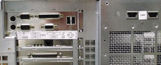
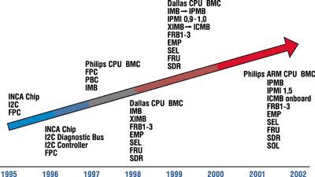
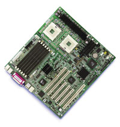

Николай Подкопаев,
технический директор компании "Форвард Технологии"
server@forwardtech.ru
Ренат Юсупов,
президент "Форвард Технологии"
renat@forwardtech.ru
На рынке систем диагностики и управления серверами складывается любопытная ситуация: о программных средствах известно более или менее подробно (это заслуга маркетологов и продавцов ПО), но мало что можно услышать о низкоуровневых механизмах, которые не связаны с интерпретацией данных (зависящей от производителей программ), а выдают реальную физическую информацию с датчиков, сенсоров и непосредственно устройств сервера.
Причины такого положения дел довольно просты - продвижение новых технологий всегда начинается с продвижения их в умах продавцов и представителей сервисных служб, а к заказчику информация обычно попадает опосредованно. Если новые технологии для простых и некритичных применений воспринимаются легко, а срок распространения концепции здесь составляет примерно полгода, то для сложных серверных систем, где неосторожное решение может привести к кризисной ситуации, аналогичные сроки достигают пяти лет. Учитывая, что корпорация Intel с 1996 г. активно продвигает серверы и с присущей ей обстоятельностью много вложила в их разработку (в том числе и в интегрированные системы диагностики и управления), то сейчас для потребляющей публики как раз наступило время прозрения относительно преимуществ надежных, качественных и, главное, живучих продуктов. Да и сами нынешние системы мониторинга и управления отличаются от первоначальных реализаций не меньше, чем современный сервер от счетной машинки "Феликс 2". Косвенным подтверждением готовности рынка к потреблению полноценных серверов с реальными автономными аппаратными системами жизнеобеспечения служат многочисленные скороспелые анонсы подобных продуктов среди тайваньских производителей серверных систем начального и среднего (по их скромному мнению) уровня - компаний Supermicro, Tyan, Microstar и т. д.
Что же такое система контроля диагностики и управления сервером в современной интерпретации Intel? Это микрокомпьютер, интегрированный на серверной системной плате и обладающий всеми присущими компьютеру атрибутами: процессором, собственными шинами ввода-вывода (I2C, IPMB, ICMB), оперативной и энергонезависимой (NVRAM) памятью, микропрограммами и т. д. Функционально такой модуль, получивший название Baseboard Management Controller (BMC), занимает главенствующее положение во всей серверной системе, и его команды беспрекословно выполняются всеми узлами сервера, в том числе и обрабатывающими пользовательские данные. BMC - это своего рода иммунная система, если сравнивать сервер с живым организмом.
Эволюция систем контроля, диагностики и управления
Итак, что же вкладывает в понятие современной системы жизнеобеспечения сервера компания Intel? Главным свойством системы считается управляемость, причем возведенная в степень. Учебники по теории надежности говорят, что непременное условие создания качественного продукта - это использование качественных комплектующих, жестких норм проектирования, тестирования и производства. Скажем, сервер по сложности намного превосходит обычный компьютер и состоит из большего числа компонентов. Поскольку надежность компонентов не может быть абсолютной, то и надежность всей системы в целом тоже не может достигать 100% - чем система сложнее, тем более вероятны ее отказы или сбои. Чтобы избежать их или хотя бы предсказать, необходима мощная система контроля за рабочими параметрами сервера. Сюда входят температурные показатели процессоров, системной платы и жестких дисков, питающие напряжения, скорости вращения вентиляторов и т. п. Помимо основных параметров необходимо контролировать состояние датчиков открывания корпуса, установку или вынимание дисков и блоков питания (если присутствует функция их горячей замены), наличие ошибок памяти, возникновение ошибок на шине PCI, сам факт включения или выключения сервера, а также зависание операционной системы. Для подобной работы и используется специализированный контроллер управления системной платой BMC.
Сама концепция управляемости сильно менялась с годами. Постепенно совершенствуясь, она стала более логичной (хотя и усложнилась), появились стандарты управления, принятые многими разработчиками компьютерного "железа".
Чтобы понять современную логику реализации систем жизнеобеспечения сервера, необходим довольно глубокий экскурс в историю развития систем управления серверами. Мы здесь не ставим целью дать детальный обзор управляемости всех серверных платформ, производимых Intel. Остановимся только на ключевых, переломных этапах "серверостроения", на тех деталях, по которым можно проследить цепочку развития идеологии управляемости. Поэтому некоторые платформы мы не станем упоминать.
Altair, 1995 год
Одним из первых серверных продуктов Intel была система под кодовым названием Altair (ниже мы часто прибегаем к кодовым обозначениям систем, поскольку в официальный классификатор продукты попадают только после их официального объявления, а мы упоминаем и о таких серверных разработках Intel, которые так и не дошли до стадии промышленного производства). Вся управляемость этой серверной платформы ограничивалась измерением напряжений и температур в ряде мест, а также возможностью блокирования кнопок питания и сброса и отключения мыши и клавиатуры до ввода пароля на аппаратном уровне (режим Security). BMC в нынешнем понимании еще не было. Функции контроллера выполняла отдельная микросхема, INCA Chip (INterrupt Control ASIC), выступавшая по совместительству как контроллер прерываний. Функция Watchdog Timer позволяла автоматически перегружать сервер при зависании операционной системы. Кнопки питания и сброса обслуживал отдельный контроллер лицевой панели FPC. Для связи между INCA chip и FPC служила шина I2C (Inter-Integrated Circuit), разработанная фирмой Philips задолго до этого и широко использовавшаяся в бытовой технике. Эта шина была выбрана не случайно: она проста в проектировании и реализации, поскольку использует всего два провода для передачи данных. Для нее уже тогда существовало большое количество микросхем периферии - таймеров, АЦП, ЦАП, регистров, мультиплексоров и т. п., что существенно понижало стоимость систем. FPC выполнялся в виде отдельной микросхемы - микроконтроллера. Больше ничего особенного в этой платформе не было, однако в середине 1990-х понятия "управляемость" и "надежность" ассоциировались с мэйнфреймами, а об Intel-архитектуре производители серверов отзывались с некоторым презрением, считая ее уделом дешевых персоналок.
Alder, 1996 год
Следующей предложенной Intel платформой была AP450GX, или Alder. Помимо вышеперечисленных функций она обеспечивала возможность доступа к шине I2C со стороны операционных систем (эта функция существовала и ранее, но не документировалась в описаниях). Теперь на плате был свой контроллер I2C, Philips PCF8584, а сама шина I2C называлась диагностической - подразумевалось, что она может использоваться для различных сервисных функций, таких, как определение версии системной платы, контроль выхода из строя вентиляторов, чтение состояния перемычек, задающих частоту шины процессора и коэффициент умножения ядра, тип платы памяти и скорость памяти по банкам и т. п. Кстати, в то время еще не было модулей памяти с SPD (Serial Presence Detect), поэтому скорость памяти задавалась перемычками на самом модуле памяти - их состояние и считывалось контроллером. Идея Intel со считыванием скорости из модуля памяти оказалась перспективной, и с появлением SDRAM на модулях памяти в соответствии со стандартом стали размещать отдельную микросхему SPD EEPROM, в которой хранились основные скоростные параметры работы памяти, имя производителя и т. д., а для доступа к EEPROM - использовать все ту же шину I2C.
Buckeye, 1997 год
Практически одновременно с Alder была объявлена платформа BB440FX (Buckeye). На самом деле разработка Alder началась задолго до Buckeye, но ее сложность (шина EISA, "старый" и громоздкий чипсет) и некоторые новаторские идеи (четыре процессора Pentium Pro, огромный для того времени объем оперативной памяти - до 4 Гбайт) сильно задержали выпуск. Поэтому Buckeye по праву можно называть сервером следующего поколения. Соответствующие системные платы изготовлялись по более совершенной технологии, с применением планарных микросхем с меньшим шагом выводов, что сделало сам вид платы более современным. Конечно, по сравнению с Alder она выглядела просто карликом - процессоров было в два раза меньше, памяти - в четыре, но зато в Buckeye впервые была применена идеология BMC. Контроллер BMC был изготовлен на основе процессора 87C552 все той же Philips. Это был полноценный микрокомпьютер с собственной ОС. Он начинал работать сразу, как только на системной плате появлялось напряжение standby. Без ведома BMC не происходило ничего, он контролировал все и вся на плате - нажатие кнопок, извлечение процессорного модуля, работу вентиляторов, температуру и т. п., используя для этого стандартные микросхемы на шине I2C. В помощь BMC на отдельном микроконтроллере были изготовлены контроллер лицевой панели FPC, ведавший кнопками включения питания и сброса, и контроллер процессорного модуля PBC (Processor Board Controller). То, что было раньше довольно сложным и запутанным, теперь стало простым и прозрачным, а самое главное, все функции теперь были реализованы всего на нескольких микроконтроллерах. Доступ к BMC осуществлялся через DISMIC (Distributed Integrated Server Management Interface Chip - распределенный интегрированный контроллер управления сервером). Он обрабатывал важные прерывания (NMI, SMI), позволяя программам управления реагировать на них.
PBC контролировал температуру, напряжение и сам факт наличия и функционирования процессоров. Новая технология предусматривала понятие FRB (Fault Resilient Booting - загрузка при наличии ошибки с "эластичной" конфигурацией). Этим термином обозначался процесс, который в ответ на некоторые аппаратные события в системе (скажем, ошибки при стартовом тестировании компонентов) инициирует аппаратные или программные действия, позволяющие по возможности сохранить работоспособность сервера путем автоматического исключения неисправных компонентов из конфигурации сервера.
Впервые в документации на сервер тогда появилось упоминание об интеллектуальной шине управления IMB (Intelligent Management Bus). Пока это обозначение можно было лишь увидеть на схеме управления, никакие спецификации еще не доступны. Но сегодня мы знаем, что и эта идея оказалась перспективной.
Nightshade и Aspen, 1998 год
Следующий важный этап связан с платформой N440BX, или Nightshade. На этом этапе BMC уже базировался на высокоинтегрированном контроллере 80Cx10 фирмы Dallas, созданном специально для выполнения функций управления. В нем было несколько независимых шин I2C, предусматривалась интеграция с шиной ISA, что позволило использовать контроллер как DISMIC. На микросхеме было больше портов ввода-вывода и аналогово-цифровых преобразователей ADC (Analog-Digital Converter, АЦП), что позволило измерять и контролировать напряжение в большем числе мест. Таким образом, впервые была реализована идея "все в одном" - один контроллер выполнял функции BMC, FPC, PBC и DISMIC. Благодаря высокому интеллекту BMC механизм "опознавания" неисправных процессоров был расширен. Если ранее встречалось только упоминание о механизме FRB, то теперь его разделили на несколько уровней - FRB1, FRB2 и FRB3. Расскажем о них более подробно.
Механизм FRB1 реализован программно на уровне BIOS. На этапе POST система считывает значение регистра BIST (Built-In Self Test - встроенная самодиагностика), и, если присутствует ошибка, процессор отключается с занесением кода ошибки в энергонезависимую память. После перезагрузки этот процессор не участвует в конфигурации сервера.
FRB2 реализован программно и аппаратно на уровне BMC и BIOS. При старте процессора запускается функция Watchdog Timer на 6 мин (в серверах с большим объемом памяти времени отводится больше). Этого времени должно хватить на то, чтобы закончился POST. Перед началом загрузки (прерывание 19h) FRB2 Watchdog Timer выключается - если этого не произошло, то выполняется перезагрузка системы с отключением загрузочного процессора BSP (Boot Strap Processor) - естественно, подразумевается, что в сервере их несколько.
FRB3 действует на уровне BMC. После подачи питания перед снятием сигнала сброса с процессора на несколько секунд запускается Watchdog Timer, за это время процессор должен успеть запуститься и выключить таймер. Если этого по какой-либо причине не произошло, считается, что процессор неисправен, и выполняется перезагрузка системы с его отключением. Система следит за тем, чтобы всегда оставался хотя бы один процессор, пусть даже по ее мнению неисправный.
|  | Задняя панель сервера на платформе Aspen.
|
Возросшая гибкость и аппаратная мощь BMC (большее количество памяти, более высокая частота работы микроконтроллера) позволили развить протокол управления платформой. В качестве среды передачи в данной технологии по-прежнему использовалась шина I2C, для реализации протокола применялась только передача multi-master, концепция которой отдаленно напоминала архитектуру клиент-сервер. Точно так же была реализована и общая шина IMB: для интеграции различных пассивных устройств стандарт рекомендует использовать отдельную закрытую шину Server Management Bus, чтобы избежать возможных конфликтов с адресами при подключении дополнительных устройств и уменьшить нагрузку на и без того медленную шину.
Еще одним важным новшеством, появившимся в Nightshade, стал так называемый порт аварийного управления (Emergency Management Port, EMP), позволяющий установить связь с BMC при помощи внешнего модема или нуль-модемного соединения, для чего выделялся один из последовательных портов платы (COM2). После установления связи появлялась возможность включать и выключать питание сервера, просматривать список событий системы (System Event Log, SEL), список сенсоров (Sensor Data Records, SDR), список оборудования (Field Replacement Units, FRU) и перехватывать текстовую консоль, что позволяло войти в BIOS Setup, скорректировать необходимые настройки, загрузиться в режиме DOS и провести диагностику системы или ее ремонт (обновить BIOS, Firmware, FRU или SDR).
В том же 1998 г. была представлена новая платформа AD450NX, или Aspen, поддерживающая до четырех процессоров Pentium II Xeon и до 8 Гбайт оперативной памяти. Помимо всех усовершенствований управления, имевших место в предыдущей платформе, появилась невзрачная на первый взгляд конструкция под названием XIMB (eXternal Intelligent Management Bus - внешняя интеллектуальная шина управления). В документации на платформу про эту шину не было сказано ни слова, ее название присутствует только в обозначении сигналов некоторых разъемов, а также в виде подписей к двум загадочным разъемам на задней панели сервера.
Учитывая, что платформа начала разрабатываться задолго до выхода на рынок (разрыв составляет от полутора до двух лет), можно предположить, что идея с IMB настолько понравилась Intel, что она решила дальше развивать этот стандарт и вывести его за пределы сервера. При этом отдельный контроллер преобразовывал запросы, посылаемые BMC, и отправлял их наружу другим подобным устройствам. Это позволяло преодолеть существенные ограничения, накладываемые архитектурой IMB на максимальное количество адресов в одном сегменте шины (125), а также на максимальную длину этого сегмента (десятки сантиметров). В качестве среды передачи XIMB предлагалось использовать промышленный вариант последовательного интерфейса, RS485, работающий в полудуплексном режиме со скоростью 19 200 бит/с. Максимальное число устройств в соответствии со стандартом равно 42, максимальное удаление составляет 100 м, а средой передачи служит обычная витая пара. Шина должна иметь только последовательно (цепочкой) расположенные устройства, которые постоянно "слушают" передаваемые данные. Если устройству необходимо передать какие-либо данные, оно должно дождаться конца передачи, выждать некий - определяемый стандартом - интервал времени и только после этого выполнять передачу. Для обеспечения целостности пакетов предусматриваются контрольные суммы. Каждое устройство имеет свой шестнадцатиразрядный адрес, который оно может запомнить во внутренней энергонезависимой памяти (хотя может этого и не делать). Управляющее ПО посылает в сеть запросы, получает адреса устройств и проводит их опрос по мере необходимости. Данная схема очень удобна для объединения в сеть сервера и нескольких связанных с ним периферийных устройств наподобие дисковых стоек, библиотек ленточных накопителей и т. д. При этом администрирование всей системы в целом упрощается, это можно осуществлять с одного рабочего места с помощью единого ПО.
Lancewood, 1999 год
Очередная серверная платформа Intel получила название L440GX, или Lancewood. Фактически она была близнецом N440BX, но в документации к ней вместо IMB появляются упоминания о IPMB (Intelligent Platform Management Bus - интеллектуальная шина управления платформой), а также слова про некий разъем ICMB на системной плате. Для чего он, собственно, нужен, общественность тогда еще не знала.
Через некоторое время в рамках инициативы Wired For Management (можно перевести как "предназначенный для управления") Intel сняла гриф секретности с IMB и XIMB и сменила их названия. Новые шины стали называться соответственно IPMB и ICMB (Intelligent Chassis Management Bus - шина управления интеллектуальными корпусами). Тем самым Intel подчеркнула сферы их применения - серверы и не-серверы. Если в документе, описывающем IMB, кроме Intel не значится ни один производитель, то теперь (в стандарте IPMB/ICMB) - очевидно, для поднятия престижа и привлечения большого количества сторонников - помимо Intel указаны еще три соавтора, а именно Hewlett-Packard, NEC и Dell.
Coosbay и Dodson, 2002 год
Выходят две новые платформы, поддерживающие отмирающий процессор Pentium III, - это Coosbay (SCD2) и Dodson (SDS2). Для продления жизни Pentium III Intel специально выпустила его серверный вариант с 512 Кбайт кэш-памяти второго уровня. Однако уже создается ощущение, что жизнь новых платформ будет недолгой и что выпущены они лишь с целью немного отодвинуть пришествие новых процессоров Intel Xeon, объявленных ранее. Но нам эти платформы интересны по другой причине - в них BMC использует в качестве ядра уже не MCS51 (этот контроллер с трудом справлялся с объемом возложенных на него задач), а новую схему на базе технологии StrongArm. Теперь в BMC интегрированы буквально все мыслимые функции, включая мост IPMB-ICMB. Для подключения к ICMB достаточно приобрести недорогую плату, на которой распаян преобразователь RS232-RS485 и имеются два разъема. Вдобавок ко всему BMC теперь поддерживает новую версию протокола IPMI 1.5 (Intelligent Platform Management Interface), коренным образом усовершенствованную по сравнению с предыдущей и, как следствие, усложнившуюся. В предыдущей версии IPMI внешняя связь между устройствами была возможна только при использовании ICMB (или Serial EMP). В новой версии добавилась возможность связи через локальную сеть Ethernet. Это стало тихой революцией, поскольку позволило осуществлять полный мониторинг системы независимо от типа установленной на нем ОС, а также от состояния (включен, выключен, завис) самого сервера.
И, наконец, осенью 2002 г. на рынок выйдут еще несколько серверных систем на базе Intel Xeon. К вышеперечисленным особенностям добавится еще одна, совершенно революционная вещь - "последовательный интерфейс поверх LAN" (Serial Over LAN, SOL). Иными словами, для EMP-соединения теперь не нужен будет модем, все операции, даже перехват консоли, будут происходить поверх локальной сети. Ранее для этого требовалась специальная плата, Emergency Management Card, выпускаемая Intel и продаваемая отдельно по цене в несколько сотен долларов.
На этом можно закончить исторический обзор развития управляемости серверных платформ, производимых Intel. Мы могли бы спрогнозировать дальнейший вектор развития управляемости серверов, но это предмет для рассмотрения в другой статье.
|  |
| Последовательность развития технологий и интегрированного мониторинга управления.
|
Период технологической смутыВ 1999 г. у Intel началась полоса неудач, связанная с попыткой внедрения новой архитектуры памяти, Rambus. На несколько лет развитие IPMI осталось не подкрепленным ни одной новой серверной платформой (за исключением Koa или SPKA4/SRKA4). Одна за другой снимались с разработки почти уже готовые платформы (Pine, Hemlock, Willow), менялись стратегии продвижения систем на рынок, менялась система названий серверов. Изначально предполагалось выпускать Hemlock на базе чипсетов i820, а Koa - на базе i840. После неудачных попыток добиться стабильной работы Hemlock решено было выпускать на i840, а для Koa впервые выбрали набор микросхем стороннего производителя - RCC (ныне ServerWorks). Hemlock и Pine уже были практически доведены до стадии выпуска, когда обнаружилась досадная нестабильность при взаимодействии чипсета с SDRAM. В конечном итоге проект закрыли, отправив под пресс несколько тысяч систем. В спешном порядке пришлось менять стратегию продвижения серверов. Платформу Lancewood (L440GX) адаптировали к новому корпусу, в котором планировалось выпускать Pine, Hemlock и Willow. Морально устаревший контроллер Ultra-2 SCSI на плате предлагалось заменить на более быстрый Ultra160/m. Новой платформе даже придумали название - Glen Echo, однако планы не осуществились (платформу сняли за две недели до начала поставок). В короткие сроки разработали и выпустили на рынок две новые платформы Tupelo (STL2) и Baytown (SBT2) - для Pentium III и Pentium III Xeon DP соответственно. Их по заказу Intel разработала японская корпорация NEC, у которой было свое, совершенно отличное от Intel понятие об управляемости. BMC на плату они поместили, но возможности подключения для управления каких-либо устройств, например, Hot-Swap корзины для жестких дисков, не предусмотрели или не успели реализовать. Во всяком случае незапаянный разъем с надписью IPMB на плате присутствовал, но не работал. |
ПО управления
Традиционно со всеми платформами Intel поставлялось ПО, с помощью которого можно было проводить мониторинг систем сервера и тем или иным образом сообщать о неполадках. Ко всем платформам, выпускавшимся до 1999 г., прилагался пакет Landesk Server Manager (LDSM), созданный в программистском подразделении Intel. В 1999 г. подразделение вышло из состава Intel и стало продавать LDSM как отдельный продукт. Intel вынуждена была начинать все практически с нуля. Так появился пакет Intel Server Control (ISC), выпускаемый до сих пор и непрерывно совершенствующийся добавлением новых возможностей. Текущая версия продукта имеет номер 5.0.
Intel Server Control представляет собой резидентную программу, инсталлируемую поверх серверной операционной системы (Windows NT/2000, Linux, Novell, UnixWare). Программа условно состоит из двух частей - серверной (собственно резидент) и клиентской, служащей для просмотра, настройки и мониторинга состояния системы. "Поведение" серверной части можно сконфигурировать по желанию пользователя. К событиям системы (которые в состоянии отследить BMC) можно привязать различные ответные действия: отсылку электронной почты или SNMP-сообщения, запуск приложения и т. д. (при желании можно настроить отсылку сообщений на пейджер или мобильный телефон). Кроме того, ответом на важные с точки зрения системы события (например, превышение допустимой температуры) может быть завершение сеанса ОС, выключение питания или перезагрузка.
Архитектура современного BMC
Все BMC, от самой первой реализации до последней, представляют собой не что иное, как самостоятельный компьютер, правда, очень маленький и предназначенный для узкого круга задач. Действительно, это больше, чем просто микроконтроллер: все основные присущие компьютеру признаки налицо - есть микрокод, фактически представляющий собой BIOS, есть оперативная память, шины ввода-вывода (I2C, последовательный порт), есть даже операционная система реального времени!
Этот маленький компьютер постоянно опрашивает датчики, важные с его точки зрения. Он следит за функционированием других интеллектуальных устройств, подобных ему самому. Он способен сам отвечать на запросы любого такого интеллектуального устройства. Иными словами, происходит постоянная закулисная работа по мониторингу системы. По терминологии, предложенной Intel в спецификации IPMI, все датчики и устройства, доступные BMC, называются сенсорами. Их список хранится в специальной энергонезависимой памяти и называется SDR (Sensor Data Records). Каждый сенсор представлен своей записью, в которой определено, каким образом надо интерпретировать его значения, нужно ли реагировать на выход значения за пределы допустимых параметров, которые здесь же и указываются. Запрограммирована даже формула, с помощью которой можно перевести показания сенсора (обычно восьмибитное значение) в общепринятые значения - градусы, вольты, обороты в минуту и т. д. Сенсоры обычно опрашиваются по кругу, через заданный интервал времени, их значения сравниваются с допустимыми и в случае отклонений BMC может послать системе событие и занести его в энергонезависимую память для последующего анализа.
|  | Серверная плата SHG2 Hodges для процессоров Intel Xeon.
|
Заключение
Мы рассмотрели системы жизнеобеспечения серверов, реализованные компанией Intel. У других производителей, возможно, это реализовано как-то иначе. Лучше или хуже - вопрос отдельный. Однако можно поговорить о некоторых объективных критериях, позволяющих оценить качество реализации и перспективность технологии.
Начнем с качества и привлечем на помощь статистику и наш семилетний опыт гарантийного обслуживания серверов, собранных на платформах Intel. BMC в серверных платформах представляет собой электронный функциональный блок, собранный из различных элементов логики и пассивных устройств. Естественно, любое усложнение схемы не добавляет ей физической надежности. Однако проблемы физического отказа научились решать еще при царе Горохе банальной отбраковкой на стадии массового производства компонентов и системных плат. И действительно, опыт поставок более чем 9000 серверов на платформах Intel выявил всего несколько случаев отказа систем из-за физической неисправности BMC. Гораздо чаще встречаются проблемы с программными ошибками в кодах BMC, но они не являются фатальными и "лечатся" простой перепрошивкой.
Зато пользу от появления BMC просто невозможно переоценить. Мы все привыкли в случае поломки сломя голову мчаться в гарантийную мастерскую и с пеной у рта требовать срочного ремонта. Появление BMC в девяти гарантийных случаях из десяти сводит общение к дистанционной диагностике сервера посредством пересылки по почте содержимого SEL. Для грамотного специалиста содержимое SEL - это подробное заключение интегрированного в сервер патологоанатома. Даже вооруженный тестовым стендом "гарантийщик" вряд ли сумеет сделать большее. А дальше идет банальное "колдовство" - выявление причин неисправностей по совокупности системных сообщений. Здесь помогают глубокие знания и большой практический опыт, причем опыт имеет решающее значение. Согласитесь, замечательная картинка.
А теперь попробуйте представить себе нечто подобное, только с доморощенным сервером, собранным на двухпроцессорной (или, не дай бог, на четырехпроцессорной) плате ведущих тайваньских производителей. Полагаем, в случае отказа кроме чертыханий и высказываний по поводу генеалогического древа уважаемых китайцев вы ничего не услышите. Смешно? Нет, печально, поскольку в погоне за экономией пользователи сами себя обрекают на эти мучения. Это вызвано элементарной необразованностью покупателей и некомпетентностью (не хочется произносить страшное слово "нечестность") некоторых горе-продавцов. Эта статья - не гимн "белой" технике, а обращение к здравому смыслу.
Позволим себе дать системным администраторам простой, но важный совет - при инсталляции сервера обязательно устанавливайте ПО мониторинга и управления серверами (в случае Intel-платформ это Intel Server Control). И обязательно заглядывайте в журнал SEL, он поведает не только о критических событиях, но и о некоторых ваших недоработках, которые снижают надежность системы и в будущем могут привести к критическим отказам сервера. Простейший пример - в сервере с тремя блоками питания подавляющее большинство пользователей подключают к розетке только один. SEL об этой "забывчивости" методично сообщает при каждом старте.